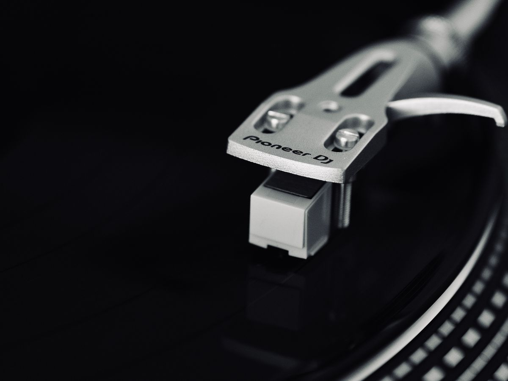
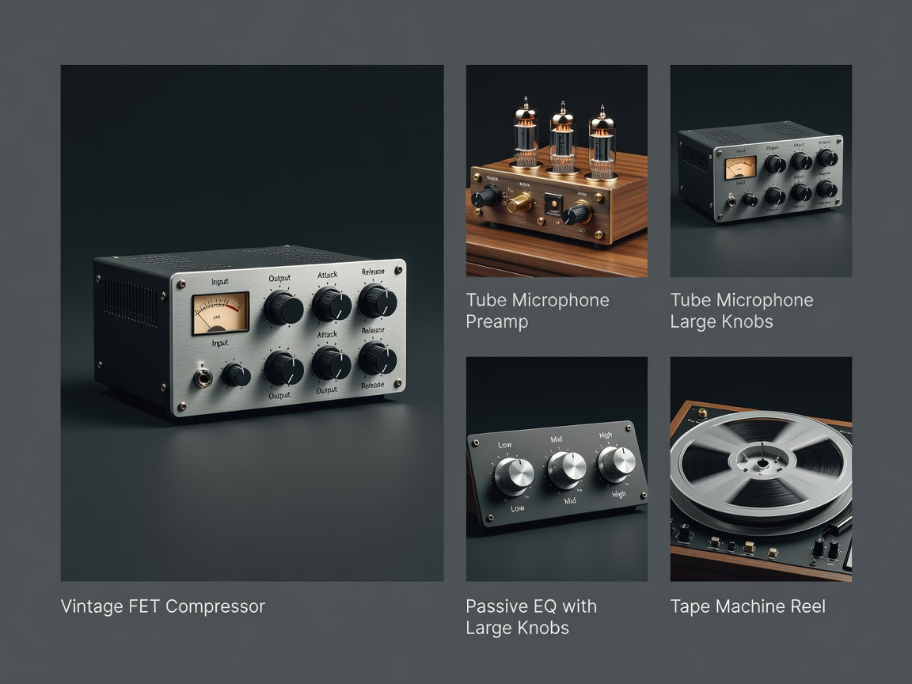
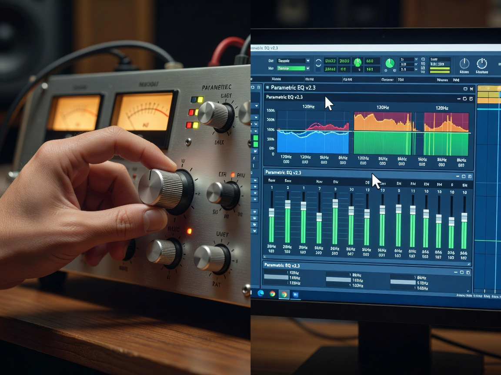
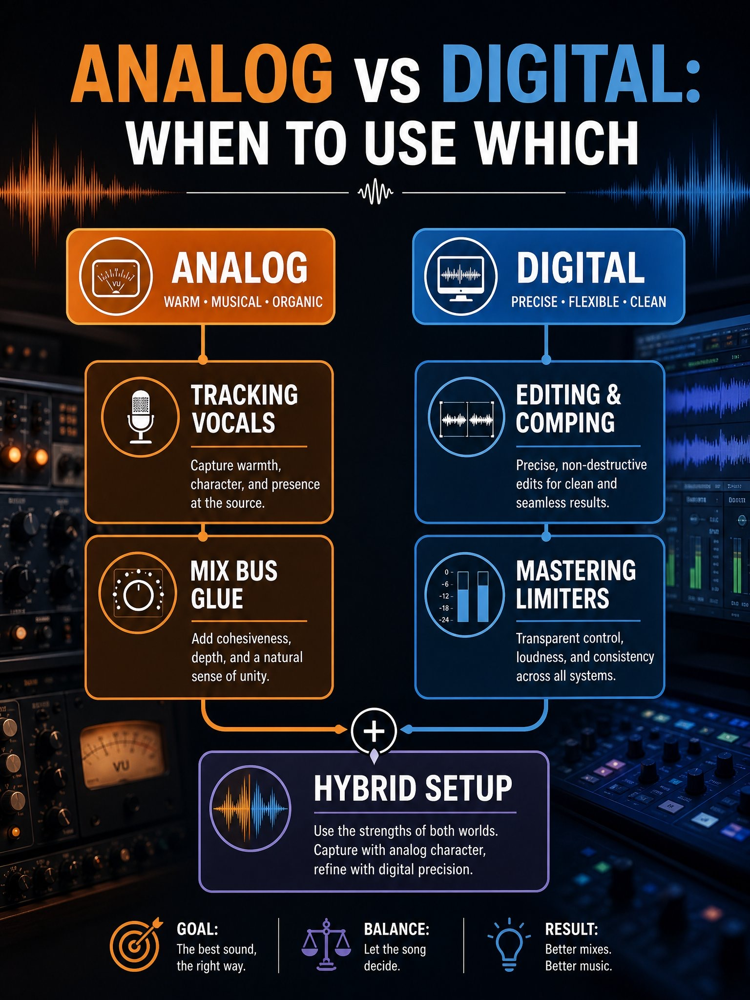
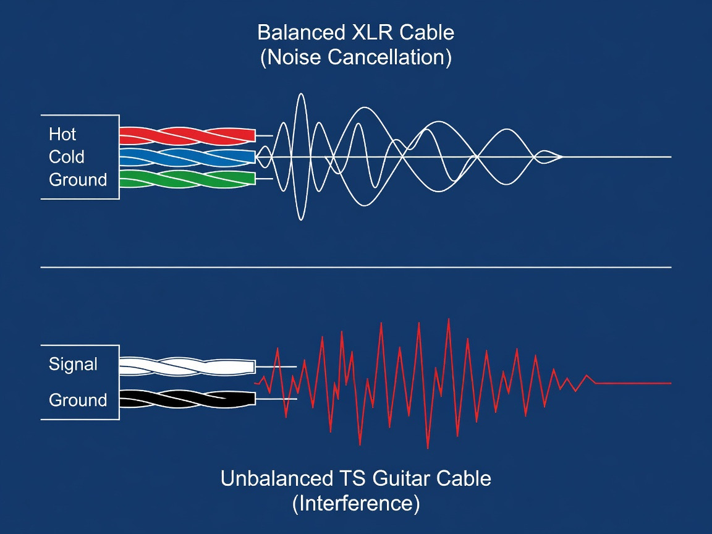
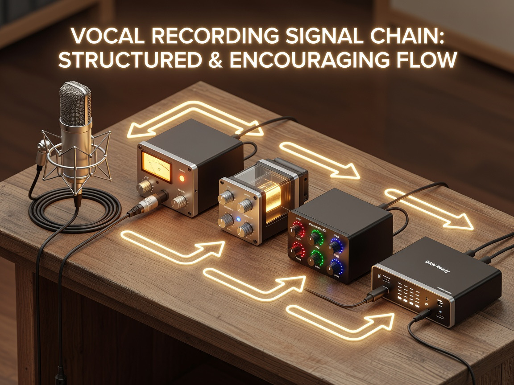

Analog Audio Equipment Guide: Types, Specs, and Buying Tips

Analog audio equipment refers to gear that captures, processes, and reproduces sound as a continuous electrical waveform rather than a stream of binary samples. Tape machines, tube preamps, optical compressors, transformer-coupled mixers, vinyl turntables. That's the family. And in Ottawa, where the hi-fi scene quietly punches above its weight thanks to boutique dealers and a tight community of mix engineers, demand for this stuff has been climbing in ways the spec-sheet purists didn't quite predict.
We've spent enough time in studios and listening rooms to know the debate isn't really analog vs digital anymore. It's about what each medium does to the signal, and what you want out of the chain.
What Is Analog Audio Equipment?
Picture a guitar amp humming at idle. That hum, that hiss, that ever-so-slight movement of voltage when nothing's playing, is the language analog gear speaks. The signal is a physical event, and every component it passes through shapes it.
Signal Flow Basics
Audio enters a microphone or instrument, travels through cables (balanced or unbalanced), hits a preamp, possibly a compressor, an EQ, then summing or recording. Each stage adds or subtracts from the waveform. Nothing is sampled. Nothing is quantized. The signal stays continuous from source to speaker, which is why a single bad cable or a poorly grounded patchbay can wreck the whole chain.
Core Components
The pieces most buyers gravitate toward are microphones, preamps, channel strips, compressors and limiters, equalizers, summing mixers, tape machines, and turntables for playback. Auxiliary gear like direct boxes, gates, and effects processors round things out. A high-end audio store worth its salt will stock at least a few special manufacturers across each category, and the Audio Engineering Society's technical library has stacks of papers on the harmonic distortion and tape saturation behaviors that make these devices behave the way they do.
Why Engineers Still Buy It
Frankly, plugins have closed a lot of the gap. But the harmonic coloration of a transformer-coupled input, the way an opto compressor smears transients with a musical lag, the subtle even-order distortion of a tube preamp, those aren't accidents. They're the result of physics that emulations approximate but never quite duplicate. Steve Albini, before he passed, argued that analog tape was actually more future-proof than digital files because tape playback mechanics are universally understood, while obscure DAW formats from 1998 are already half-dead. He had a point.
Types of Analog Gear Worth Buying

Preamps and Channel Strips
A preamp is where character starts. Neve-style transformer pres add weight and a slight midrange forwardness. API-style discrete pres push transients. Tube units like the Telefunken TF 51 add bloom and air to vocals in a way that's instantly recognizable on a mix. A channel strip combines preamp, EQ, and dynamics in one path, which keeps the front end audio coherent and saves rack space.
Compressors and Limiters
Optical, FET, VCA, vari-mu. Each compressor topology reacts differently to incoming signals. An LA-2A-style opto unit is slow and forgiving on vocals; an 1176-style FET is fast and aggressive on drums or guitar. Mastering compressors like the SSL bus compressor or Bettermaker units handle full-mix glue. Limiters protect peaks without squashing dynamics, assuming you're not abusing them.
EQs, Mixers, and Tape Machines
Pultec-style passive EQs do something cheeky to the low end that makes kick drums and bass guitars sit together. Studio consoles, whether a vintage Neve 8068 or a modern SSL, define the sound of the room they live in. Tape machines like the Studer A800 add saturation, slight compression, and a particular bass thickness. A summing mixer is the compromise option for hybrid setups: you mix in the box, then bus stems through analog summing to glue them.
Analog vs Digital Audio: Which Sounds Better?

Here's where the arguments get loud. Neither is universally better. They're different tools with different fingerprints.
| Attribute | Analog | Digital |
|---|---|---|
| Dynamic range | ~70-90 dB (tape), higher for top-tier consoles | 120+ dB (24-bit) |
| Frequency response | Source-dependent, often gently rolled | Flat to Nyquist |
| Distortion character | Harmonic, musical | Aliasing, clipping is harsh |
| Recall | Manual, slow | Instant |
| Cost per channel | High | Low |
| Maintenance | Ongoing | Minimal |
Fidelity and Dynamic Range
On pure measurement terms, modern digital audio wins. A good converter gives you wider dynamic range, lower noise floor, and flatter frequency response than any tape machine ever built. If your goal is forensic accuracy, digital is the right answer.
Harmonic Character and Coloration
Analog gear lies. Pleasingly. It adds second and third-order harmonics that the human ear reads as warmth, depth, presence. The Neumann U47, the Pultec EQP-1A, the Studer tape head, they all introduce harmonic content that sweetens the source. Plugins emulate this, often beautifully, but the cumulative effect of multiple analog stages still sounds different than the same plugins stacked in series.
Workflow and Portability
Twisting a knob feels different than dragging a mouse. There's a tactile commitment to analog decisions that changes how engineers work. Digital is portable, recallable, infinitely undoable. Analog is a room full of metal boxes that need power, heat dissipation, and patience.
How to Choose Between Analog and Digital Setups

Budget and Room Considerations
A treated room matters more than a $5,000 preamp. We've heard $300 interfaces in a great room beat $50,000 chains in a bad one. If your space isn't acoustically sorted, spend there first. After that, allocate analog dollars to the front end audio, because coloration applied at tracking is permanent and shapes everything downstream.
Genre and Source Material
Hip-hop and electronic producers can often live entirely in the box. Acoustic, jazz, rock, anything with mic'd sources, benefits more from analog front ends. Vocals especially. A great mic into a transformer preamp into an optical compressor will outclass any plugin chain on a serious vocal session.
Hybrid Signal Chain Approach
Most working studios today run hybrid. Digital recall for mixing convenience, analog summing or processing on the master bus, hardware on key tracking chains. The Wesaudio NG soundbox and Flock Audio's digitally controlled analog patchbays solve the recall problem that used to make hybrid setups painful.
Quick reference for which side of the fence to lean on:
- Tracking vocals or acoustic instruments: lean analog at the input
- Editing, comping, time alignment: digital, every time
- Mix bus glue and tonal cohesion: analog summing or tape emulation hardware
- Mastering for streaming targets: digital limiting after analog tone shaping
- Live recording with limited channels: hybrid console with digital capture
Balanced vs Unbalanced Connections Explained

TRS, XLR, and TS Cables
XLR and TRS carry balanced audio using three conductors: hot, cold, and ground. TS cables (standard 1/4" guitar cables) are unbalanced, with just signal and ground. Balanced connections reject common-mode noise; unbalanced ones don't.
Noise Rejection and Cable Length
Balanced cables can run 50 to 100 feet without picking up significant hum. Unbalanced cables start degrading after about 15 to 20 feet, especially near power lines, dimmers, or fluorescent lights. If your patchbay is more than a short hop from the source, go balanced.
Convert Between Balanced and Unbalanced
Direct boxes (DIs) convert unbalanced instrument signals to balanced mic-level outputs, which is how bass and keyboards get into studio consoles cleanly. Going the other way (balanced to unbalanced) requires a proper transformer or impedance-matched adapter to avoid level loss and grounding issues.
Stereo vs Mono and Phase Issues
When to Track in Mono
Most sources are mono. A single vocal, a single guitar amp, a kick drum. Tracking mono and placing the signal in the stereo field at mix time gives you flexibility. Tracking stereo when the source is mono just doubles your file size and creates phase headaches.
Split and Merge Signals Safely
Splitting a signal to two destinations should be done through a buffered splitter or a transformer, not a passive Y-cable, which loads the source impedance and can dull the tone. Merging signals (summing) needs a proper summing mixer with matched gain stages.
Prevent Phase Cancellation
When two mics capture the same source from different distances, frequencies arrive at slightly different times and partially cancel. The 3:1 rule helps: keep mics at least three times farther from each other than from the source. Polarity flip switches, time alignment in the DAW, and Haas-window adjustments all help fix phase issues after the fact.
A Practical Starter Chain for New Buyers

If we were building from scratch on a working budget, here's the order we'd buy in. A reputable single-channel preamp with a transformer-coupled input. A versatile compressor, ideally optical for forgiveness or FET if you track aggressive sources. A musical EQ, Pultec-style for color or a clean parametric for surgical work. Cables that aren't garbage. A patchbay so you can re-route without crawling behind racks.
Mic into the preamp for color. Into the compressor for dynamics. Into the EQ for tone shaping. Into your converter. That's it. You can produce broadcast-quality vocals with that chain and a treated room.
Common Buyer Mistakes to Avoid
We see the same purchases regretted over and over. Buying a flagship console before treating the room. Stacking five compressors in series because one famous engineer mentioned it. Believing that "vintage" automatically means "better" when half of that vintage gear needs $2,000 in recapping before it tracks reliably. Ignoring grounding and ending up with a 60-cycle hum on every session. Investing in mastering equipment before learning how to mix.
The other big one is chasing brands instead of behaviors. Two preamps with similar transformer designs can sound nearly identical regardless of the logo on the front. Listen first, brand-shop second.
FAQ
Is analog gear worth it if I mix in the box? expand_more
Yes, if you track real instruments. The coloration applied at the input stage lives in the recording forever. If you produce entirely with samples and softsynths, the case is weaker.
Do I need balanced cables for short runs? expand_more
For runs under six feet in a clean electrical environment, unbalanced is usually fine. For anything longer or near interference sources, balanced.
Can plugins fully replace analog hardware? expand_more
For convenience and recall, yes. For the cumulative behavior of multiple nonlinear analog stages compounding through a signal path, not quite. Close, but the math gets expensive fast.
What's the difference between a summing mixer and a studio console? expand_more
A summing mixer just combines stems with analog gain stages. A studio console adds preamps, EQ, dynamics, routing, and monitoring. Different jobs.
Is vinyl actually higher fidelity than digital? expand_more
No. Vinyl has lower dynamic range and more noise. People prefer it for its harmonic character and the ritual, not its measurements.
Conclusion
Analog audio equipment isn't a religion, and digital isn't a betrayal. They're tools with different fingerprints, and the smartest buyers learn which fingerprint suits the source in front of them. Start with the room. Build a front end that flatters your most important sources. Use digital for everything it does well, which is most of mixing, editing, and recall. Add analog where character matters most.
Whether you're hunting down a Nagra HD phono stage, building a hybrid mix room, or just trying to figure out why your vocals sound thin, the answer almost always lives in the signal chain. Trust your ears, treat your room, and buy gear that solves a real problem rather than fills a shelf.